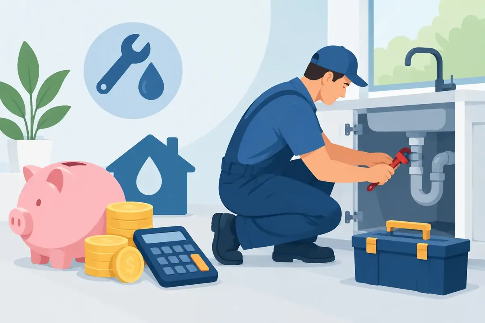

A failed water heater rarely waits for a convenient month. Neither does a sewer backup, a slab leak, or a burst pipe that threatens the flooring in your home or the operations at your business. Plumbing financing can give Middle Tennessee property owners another way to move forward when a necessary repair or replacement does not fit neatly into the household or facility budget.
The goal is not to make a plumbing problem seem smaller than it is. The goal is to help you make a sound decision without delaying work that could lead to more damage, lost hot water, unhealthy water conditions, or a costly interruption to your day.
When Plumbing Financing May Make Sense
Financing is often most helpful when the work protects the property, restores an essential service, or prevents a larger expense. A leaking water heater may still be producing hot water, for example, but continuing to use it can risk a sudden tank failure and water damage. A sewer line with recurring backups may need more than another temporary drain clearing. Waiting can turn an inconvenient problem into an emergency.
For homeowners, plumbing financing may be worth considering when a repair involves a major system or an unexpected replacement. Common examples include water heater replacement, sewer or water line repair, whole-house water filtration, water softeners, smart water shutoff valves, and significant fixture or repiping projects.
For landlords and commercial property decision-makers, financing can help manage a necessary repair while protecting tenants, customers, employees, and daily operations. A restaurant, office, rental home, or retail space cannot always pause for a plumbing problem. Reliable hot water, working restrooms, clean water, and compliant backflow protection are practical needs, not optional upgrades.
That said, financing is not automatically the right choice for every service call. A small repair that comfortably fits your budget may be simpler to pay for upfront. The right decision depends on the size of the project, the urgency of the repair, the cost of delaying it, and the payment terms available to you.
Start With the Problem, Not the Payment
It is understandable to ask about monthly payments first when a major repair catches you off guard. But the most helpful first step is understanding what is wrong, what must be addressed now, and what can reasonably wait.
A qualified plumber should inspect the issue, explain the recommended work in plain language, and provide upfront pricing before work begins. That gives you a real project scope to evaluate instead of trying to finance a guess.
Ask whether the repair is a lasting solution or a temporary measure. For example, repairing one section of an aging water line may be sensible if the rest of the system is in good condition. If leaks have become frequent throughout the home, a larger replacement plan could offer better value over time. The same principle applies to older tank water heaters, recurring drain problems, and filtration equipment that no longer meets your family’s needs.
A good plumbing partner will not pressure you into the biggest project. They should help you understand the trade-offs: repair versus replacement, standard equipment versus higher-efficiency equipment, and immediate work versus planned improvements.
Questions to Ask About Plumbing Financing
Before choosing a financing option, take time to review the details. The monthly payment matters, but it is not the only number that matters. Ask for clear answers about the amount financed, repayment period, interest rate or promotional terms, required down payment, and any fees that may apply.
You should also ask whether there is a prepayment penalty if you choose to pay the balance early. Some property owners prefer a longer term to keep monthly payments manageable, then pay extra when their budget allows. Others prefer the shortest practical term to reduce the total cost of financing.
Approval requirements and available terms can vary. Review all financing documents carefully, and make sure you understand what you are agreeing to before work begins. A trustworthy company should be willing to answer questions clearly and give you room to make a comfortable decision.
For a larger installation, it can also help to compare the cost of the work with the cost of postponing it. A high-efficiency water heater or heat-pump water heater may have a higher upfront price than a basic replacement, but it may reduce energy use over time. A smart water shutoff valve may not eliminate every plumbing risk, yet early leak detection can help prevent extensive damage when a leak occurs. Value is about more than the initial invoice.
Projects That Can Be Easier to Plan With Financing
Some plumbing projects are emergencies, while others are opportunities to make a thoughtful improvement before a failure occurs. Financing can be useful in both situations, provided the terms fit your budget.
Water Heater Replacement and Upgrades
When hot water is gone, most families need an answer quickly. Financing may help with the replacement of a conventional tank water heater, a tankless model, or a heat-pump/hybrid unit. The best option depends on the home’s hot-water demand, available space, fuel source, electrical capacity, and budget.
A larger or more advanced unit is not always the right answer. A properly sized, professionally installed water heater is more important than choosing equipment based on a label alone. Ask about expected performance, maintenance needs, warranty coverage, and the total installed price.
Water Quality Improvements
Many Middle Tennessee homeowners are looking for better-tasting drinking water, less scale buildup, or added confidence in their home’s water quality. Whole-house filtration, water softeners, reverse osmosis systems, UV filtration, and water descaling systems can address different concerns.
Because these upgrades are often planned rather than emergency purchases, financing can help families choose the system that fits their actual water needs instead of settling for a short-term fix. Start with the water concern you want to solve. Hard water, sediment, chlorine taste, and microbial treatment needs require different solutions.
Leak Prevention and Pipe Work
A hidden leak can damage cabinets, drywall, flooring, and personal belongings long before it becomes visible. Pipe repairs, rerouting work, repiping, and smart water shutoff systems can carry a meaningful upfront cost, but they can also protect the home from repeated damage.
If a repair is urgent, the priority is stopping the water and protecting the property. Once the immediate danger is controlled, you can discuss whether a more complete repair plan would reduce the chance of another failure.
Drain and Sewer Repairs
Repeated clogs, slow drains throughout the building, sewage odors, and backups are signs that a deeper problem may be present. Clearing a blockage can be the right solution, but recurring trouble may point to root intrusion, pipe damage, improper slope, or an aging sewer line.
Financing may allow a property owner to address the underlying issue rather than repeatedly paying for temporary relief. A camera inspection and a clear explanation of the findings can make that decision much easier.
Protect Your Budget After the Repair
A major plumbing repair should be followed by a plan to protect the investment. Regular maintenance can identify small concerns before they become urgent. Water heater flushing, drain maintenance, plumbing inspections, fixture checks, and water-quality service all have a role, depending on the systems in your property.
It also helps to set aside a small monthly home or facility maintenance reserve after the immediate project is complete. Even a modest reserve can reduce the pressure of the next unexpected repair. Membership maintenance options may be worthwhile for owners who want scheduled care and priority support, but compare the benefits with your property’s age, systems, and service needs.
Angle Stop Plumbing serves families, homeowners, landlords, and businesses throughout Middle Tennessee with upfront pricing, respectful service, and options for necessary plumbing work. As a veteran-owned, family-focused company, we believe you deserve clear answers and professional workmanship without the pressure or foul language that has no place in your home or workplace.
If a plumbing problem is putting your property or budget under strain, do not wait for a manageable repair to become a damaging emergency. Speak with a plumbing professional, review the full scope and payment options, and choose the path that brings your home or business back to dependable service with peace of mind.